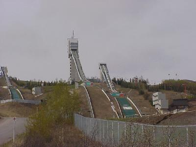
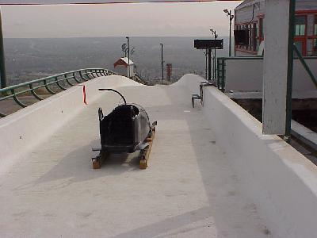
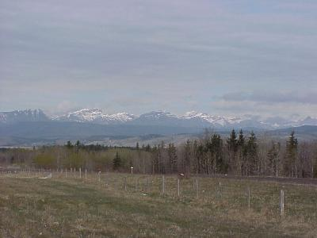
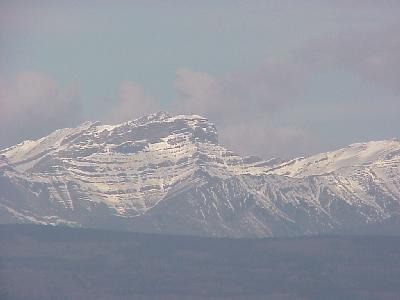
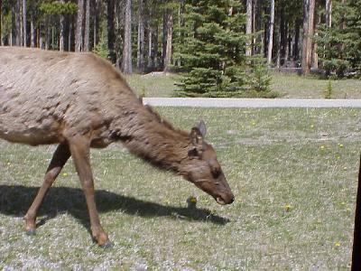
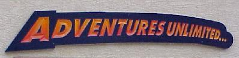
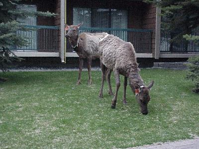
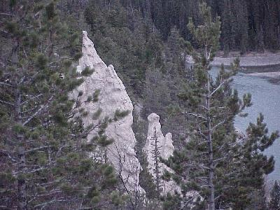
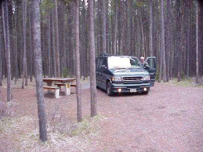

May 20, 2439 miles
| We started the day pulling out of camp at about 8:20, after a quick breakfast. | |
| Just outside Calgary we passed some of the 1988 Olympic venue sites. Two of the most visible were the ski jump facilities and bob sled run. |  |
| The bob sled run was also used for the luge. Many of the facilities are still in use today for training and competition. |  |
| Shortly after leaving Calgary we got our first glimpse of the Canadian Rockies. Could you imagine that poor settler, traveling west to make his new life with all of his worldy possessions in a wagon seeing this? |  |
| And, as he gets closer, and can see a little better
what he is up against. His horse probably just died of a heart attack. |
 |
| Elk - we saw our first elk today, and boy did we see
elk! These guys are everywhere, and they sure don't care
about a car or two. This elk was just off the road.
Donald got out for a closer picture, which our guide (more
on him later) told us was not a good idea. There was another elk just down the road from this one. |
 |
| Oh, our guide, ... we took a guided ATV adventure
trip along the base of the Rockies. Sorry no pictures
right now, we did not take the digital camera, but come
back later - when we get film developed and can scan
pictures in, we will add a few more. Sorry Mom, no picture of Dad with the ATV on top of him. ... a little oops on one of the hills, no damage to Dad. |
 |
| ... Back to the elk. Did I say there were everywhere? These two, city elk, were right downtown. Don't ask me, but dosen't it look like they are wearing collars? |  |
| Hoodoos - These geologic things appear occasionaly around here. Kind of a sandstone pillar. |  |
| We pulled into camp, not far from Calgery, in Banff,
at about 9:00 PM, after traveling 110 miles. Not much
driving, but a lot of sight seeing. This was one of the Banff Canadian National Park Campgrounds. Spacious sites, and quiet. |
 |
| Wildlife for the day included: white tail deer (2), mule deer (6), coyotes (1), prairie dogs (too many), and elk (way too many to count). | |